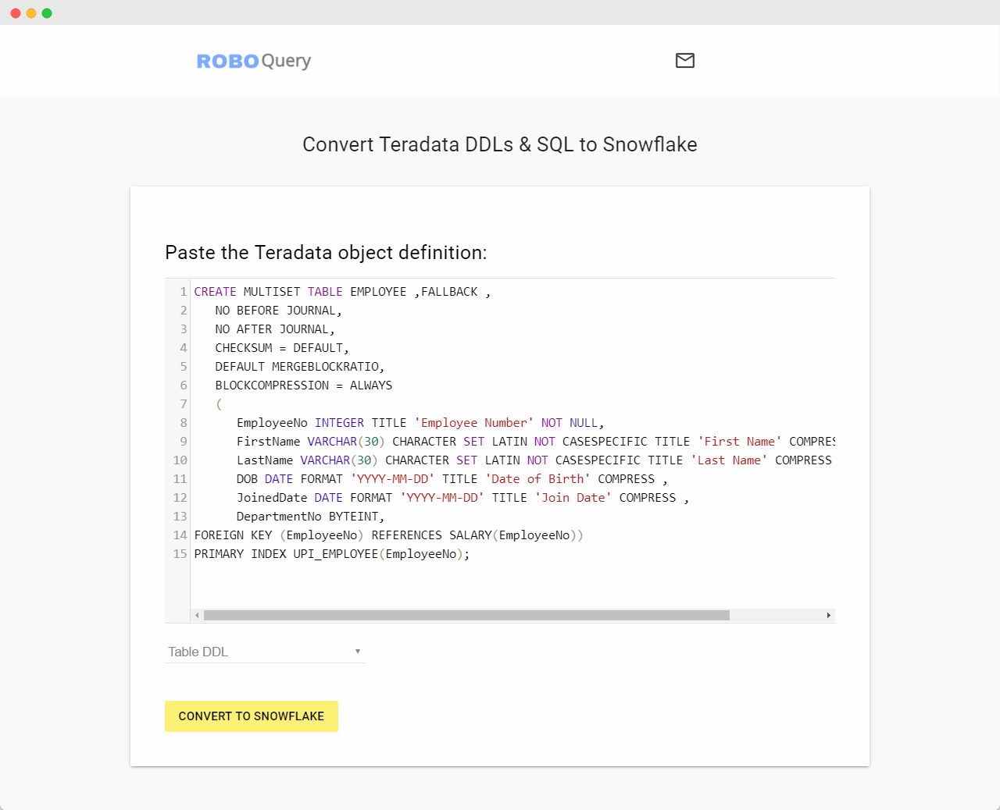

Cloud Migration is ridiculously expensive. Automate most of it with RoboQuery
Save thousands of developer hours, With RoboQuery, you can easily convert all your database objects and sql queries from one data warehouse platform to another (Teradata, Snowflake, Google BigQuery)
(Try for free, We wont ask for your credit card)

Why use RoboQuery ?
| ⭐ Its Faster - RoboQuery converts your schemas in few seconds, thereby accelerating your cloud migration |
| ⭐ Its Accurate - Avoid human errors while moving to the cloud |
| ⭐ Its a No Brainer - RoboQuery saves thousands of your valuable developer hours and brings down your costs |
So, What does it do ?
RoboQuery is a schema conversion tool, it,
| ✔️ Converts your Table DDLs from one datawarehouse platform to another |
| ✔️ Converts your View DDLs from one datawarehouse platform to another |
| ✔️ Converts your SQL Scripts including macros and procedures from one datawarehouse platform to another |
| ❌ RoboQuery only converts the database objects, It does not port the actual data in those tables |
How it works
| ⭐ Simply copy-paste the SQL query or DDL from your source |
| ⭐ Choose your target platform and click convert |
| ⭐ Viola! you are done, its fully online tool. No complex setups or developer training is needed |
| ⭐ RoboQuery is the easiest way to rewrite all your database objects while moving to the cloud |
Pricing
| Features | Personal Plan | Enterprise Plan |
|---|---|---|
| Number of databases | 1 | unlimited |
| Number of Tables | unlimited | unlimited |
| Number of Views | unlimited | unlimited |
| Team features | no | unlimited |
| Proof of Concept | free | free during POC |
| Cost | 0$ | email us |
For all commercial plans, email info@roboquery.com and we would be happy to work with you. RoboQuery is free for educational / non-commercial use. RoboQuery is also free during your POC work
Well, What about Security and Privacy ?
| We do not require any access to your database or data | |
| We do not store any of your queries / scripts | |
| The application transmits all data using a secure protocol (HTTPS) | |
| We do not track, store or share your data with anyone | |
| We will not spam your email, trust us, we have better things to do | |
| There is absolutely nothing for you to install or configure. So, we will not have any "insider access" to any of your data |